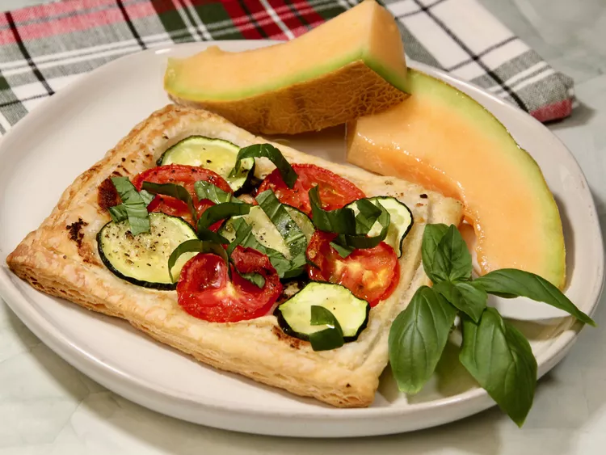

Summer Vegetable and Goat Cheese Galettes

Description
Easy and pretty vegetable tarts that can be prepared a few hours ahead of
time and reheated prior to serving.
Ingredients
- 2 tablespoons olive oil
- 1 cup chopped green onions
- 2 cloves garlic, minced
- 1 (5 ounce) creamy goat cheese log
- ½ cup grated Parmesan cheese
- 1 pinch cayenne pepper, or more to taste
- 2 sheets frozen puff pastry, thawed
- ½ pound zucchini, thinly sliced
- ½ pound roma tomatoes, thinly sliced
- salt and ground black pepper to taste
- 1 teaspoon olive oil, or as needed
- 2 tablespoons thinly sliced basil leaves
Steps
-
Heat 2 tablespoons olive oil in a skillet over medium heat; cook and
stir green onions in the hot oil until softened, about 3 minutes. Add
garlic; cook until fragrant, about 1 minute. Remove from heat.
-
Combine goat cheese, Parmesan cheese, and cayenne pepper in a small
bowl; stir with a fork until blended.
-
Gently flatten each puff pastry sheet with a rolling pin on a lightly
floured surface. Cut each sheet into four squares. Lightly cut a border
about 1/4-inch from the edges of each square using a sharp knife, not
going all the way through the dough.
- Preheat oven to 400 degrees F (200 degrees C).
-
Arrange puff pastry squares on a baking sheet; spread goat cheese
mixture on each square. Top each square with onion mixture. Chill in
refrigerator for 5 to 10 minutes.
-
Arrange zucchini and tomato slices in a pattern on each puff pastry
square, allowing vegetables to overlap. Season with salt and black
pepper. Drizzle with about 1 teaspoon olive oil.
-
Bake in the preheated oven until puff pastry is golden brown and puffed,
about 20 minutes. Garnish with basil strips.
Home